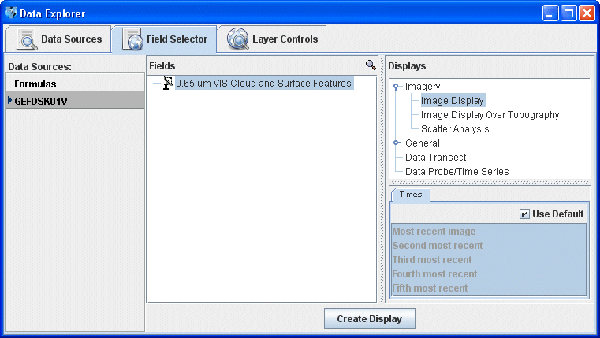

Displaying Files from a URL
This section describes how to make a display using files located at a specific
URL.
The set of steps include:
Loading Files from a URL
In the Data Sources tab of the Data Explorer, select the General->URLs data
source to view the URL file chooser. For more information about this chooser,
see Choosing a URL.
- Enter the URL into the field or choose a previously selected URL from the
pull down menu.
- Toggle the
 button
to expand the box to allow for the entry of multiple URLs, one per line.
button
to expand the box to allow for the entry of multiple URLs, one per line.
- Optionally, specify the type of data the URL contains by using the Data
Source Type menu.
- When done, load the selected URL by clicking the
 button.
button.
Creating the Display
The local image data source files will be shown in the Field
Selector tab.

Once you have selected a Field, Display, and Time(s), click the  button to display your data in the Main Display Window.
button to display your data in the Main Display Window.